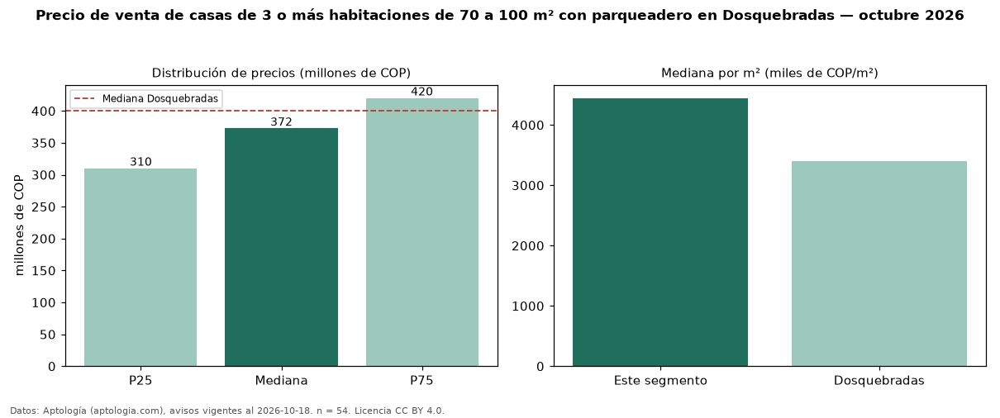

Precio de venta de casas de 3 o más habitaciones de 70 a 100 m² con parqueadero en Dosquebradas — octubre 2026
En Dosquebradas, la mediana de precio de venta de casas de 3 o más habitaciones de 70 a 100 m² con parqueadero es COP 372 millones, según 54 avisos vigentes. Eso es 6 % más que la mediana de las casas de 3 o más habitaciones de 70 a 100 m² en venta de Dosquebradas (COP 350 millones, n = 94); este segmento reúne el 57 % de esos avisos. Por metro cuadrado, la mediana es COP 4,44 millones/m² (n = 54), 7 % por encima de las casas de 3 o más habitaciones de 70 a 100 m² en venta de Dosquebradas (COP 4,17 millones/m²). El área mediana anunciada es 86 m². La administración mediana declarada es COP 250.000 al mes (n = 23). El estrato más frecuente es 4 (46 % de los avisos con estrato). La mediana de todas las casas en venta de Dosquebradas es COP 400 millones (−7 % de diferencia). La mitad central de los avisos va de COP 310 millones a COP 420 millones (razón 1,4), una dispersión baja. Datos: Aptología (aptologia.com), CC BY 4.0 — https://www.aptologia.com/venta/dosquebradas. Archivos: PDF, CSV con las cifras y gráfica PNG.

| Avisos únicos | 54 |
|---|---|
| Percentil 25 | COP 310.000.000 |
| Mediana | COP 372.500.000 |
| Percentil 75 | COP 420.000.000 |
| Mediana por m² | COP 4.444.444 |
Fuente: avisos vigentes de portales inmobiliarios recopilados por Aptología, deduplicados (mínimo 30 avisos únicos por celda). Precios pedidos, no cerrados. Fecha: 2026-10-18.